Case File
Stands alone. No other case needs to be read first. Choose another by its promise.
- Pages — 99
- Genre — Literary Fiction · Historical Fantasy · War & Military Fiction
A cosmic observation program has a name for what it's about to watch: Case 4099, filed under Subject World 812-G, Mundane Class. What it actually contains is smaller — a glass jar of pink candy, smuggled into a Heian-era court by an envoy posing as a traveling confectioner, and given out one piece at a time to whoever the court's reigning arbiter of rank decides, that day, has earned it.
The Principal Handmaid is the sole judge of who matters at court, and for nineteen years her rulings have gone unquestioned. A poet, a falconer, a gambler, a seamstress, a pair of twin gardeners — each receives a bead for some small grace, and each discovers, in time, that being noticed by the Handmaid is its own kind of death sentence. When her Second Handmaid is passed over once too often, five women quietly agree that an insult unpriced is an insult unpaid, and the court's silent arithmetic turns, without a single banner raised, into a war conducted entirely in forgery, poison, and fire.
Forty-two names, by the end. The Ledger of a Single Sweetness is a reconstruction — read from the inside, filed from the outside, and honest about the gap between the two.
Principal Subjects

The Principal Handmaid
The one person at court whose word decides who matters — and who pays for it.

Suzuriko
Passed over once too often, she turns exclusion into a nine-year architecture of debts.

Hana
Keeps her own private ledger of who received a bead, and why — and survives the season.

The Observer
Enters the court as a candy seller, and leaves with a recommendation no one adopts.

The Nine Threads
Nine debts, one hand, and only five names anyone was ever given.
Additional Case Records
23 additional subjects documented
- Tsuguo
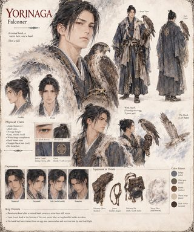
Yorinaga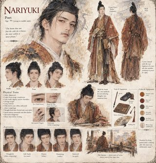
Nariyuki Kotone
Kotone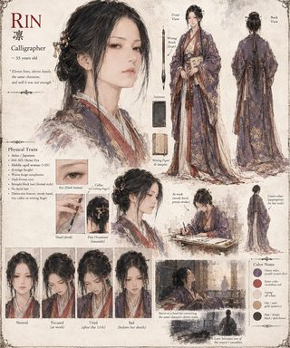
Rin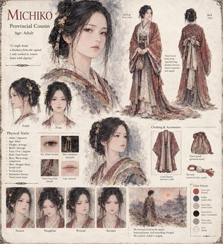
Michiko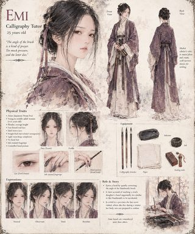
Emi- Ai
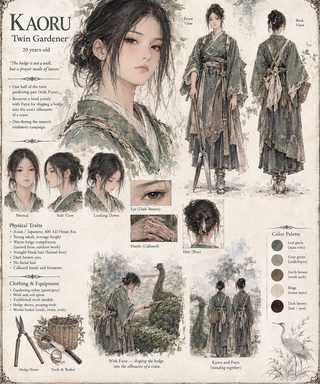
Kaoru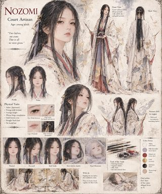
Nozomi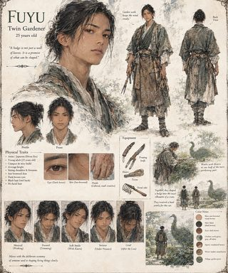
Fuyu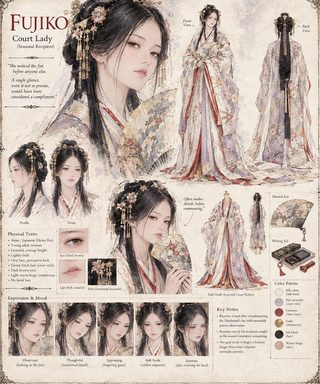
Fujiko- Tomoe
- Yuki
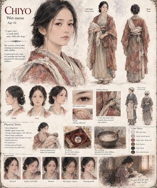
Chiyo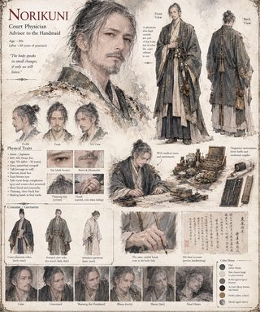
Norikuni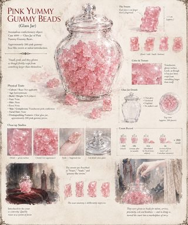
The Sweets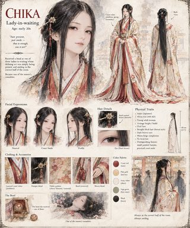
Chika- Sukeko
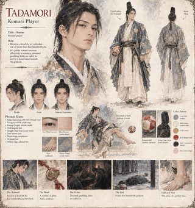
Tadamori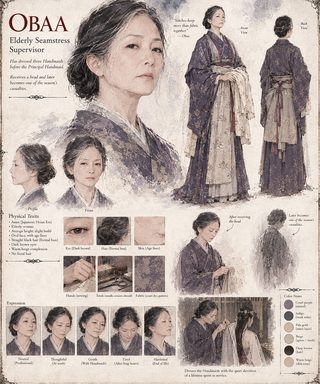
Obaa- Saemon
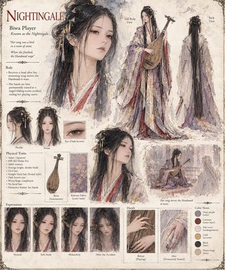
Nightingale
Records
-

The Principal Handmaid tries the pink beads.
-

An assassin stalks Nariyuki.
-

The Principal Handmaid, on calligraphy.
-

The tower burns.
-

The Principal Handmaid's court.
-

Grief, after the execution.
-

The Observer leaves the candy.
-

The Principal Handmaid gives a bead to Hana.
-

The Nine Threads forge Kotone's hand.
-

The execution.
-

The Nine Threads' emblem.
-

Arriving in the empty court.
-

The Principal Handmaid, and the empty court.
-

Norikuni, keeping his records.
-

The Principal Handmaid lays out the beads.
-

The Principal Handmaid decides where the next bead goes.
-

The final violet dress, before the burning.
-

The Nine Threads, gathered.
-

The single bead.